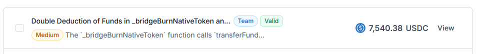

Audit Report
Confirmed ZkSync Issues
Content
- Double Dedecution (Medium)
- Failed Bridge (Medium)
Double Deduction of Funds in _bridgeBurnNativeToken and _depositFunds
The _bridgeBurnNativeToken function calls transferFundsToNTV to transfer funds from the _originalCaller and then calls _depositFunds, leading to the same funds being deducted twice. This causes unintended financial loss for users and disrupts bridge operations.
Vulnerability Details
The _originalCaller is charged twice for the same transaction:
transferFundsToNTVtransfers funds to the Native Token Vault (NTV)._depositFundsthen transfers the same amount again from_originalCaller.
This happens due to missing validation checks, leading to users losing funds unexpectedly.
function _bridgeBurnNativeToken(
uint256 _chainId,
bytes32 _assetId,
address _originalCaller,
bool _depositChecked,
bytes calldata _data
) internal virtual returns (bytes memory _bridgeMintData) {
(uint256 _depositAmount, address _receiver) = abi.decode(_data, (uint256, address));
uint256 amount;
address nativeToken = tokenAddress[_assetId];
// ETH token handling
if (_assetId == BASE_TOKEN_ASSET_ID) {
amount = msg.value;
if (_depositAmount == 0) {
_depositAmount = amount;
}
_handleChainBalanceIncrease(_chainId, _assetId, amount, true);
if (_depositAmount != amount) {
revert ValueMismatch(_depositAmount, amount);
}
} else {
// ERC20 token handling
if (msg.value != 0) {
revert NonEmptyMsgValue();
}
amount = _depositAmount;
_handleChainBalanceIncrease(_chainId, _assetId, amount, true);
// Check if the deposit amount is valid
if (!_depositChecked) {
uint256 expectedDepositAmount = _depositFunds(_originalCaller, IERC20(nativeToken), _depositAmount);
if (amount != expectedDepositAmount) {
revert TokensWithFeesNotSupported();
}
}
}
if (amount == 0) {
revert EmptyDeposit();
}
bytes memory erc20Metadata = getERC20Getters(nativeToken, originChainId[_assetId]);
_bridgeMintData = DataEncoding.encodeBridgeMintData({
_originalCaller: _originalCaller,
_remoteReceiver: _receiver,
_originToken: nativeToken,
_amount: amount,
_erc20Metadata: erc20Metadata
});
emit BridgeBurn({
chainId: _chainId,
assetId: _assetId,
sender: _originalCaller,
receiver: _receiver,
amount: amount
});
}
function _depositFunds(address _from, IERC20 _token, uint256 _amount) internal virtual returns (uint256) {
uint256 balanceBefore = _token.balanceOf(address(this));
// Transfer the funds
_token.safeTransferFrom(_from, address(this), _amount);
uint256 balanceAfter = _token.balanceOf(address(this));
return balanceAfter - balanceBefore;
}
function transferFundsToNTV(
bytes32 _assetId,
uint256 _amount,
address _originalCaller
) external onlyNativeTokenVault returns (bool) {
address l1TokenAddress = INativeTokenVault(address(nativeTokenVault)).tokenAddress(_assetId);
if (l1TokenAddress == address(0) || l1TokenAddress == ETH_TOKEN_ADDRESS) {
return false;
}
IERC20 l1Token = IERC20(l1TokenAddress);
bool weCanTransfer = false;
// Check if allowance is enough for transfer
if (l1Token.allowance(address(legacyBridge), address(this)) >= _amount) {
_originalCaller = address(legacyBridge);
weCanTransfer = true;
} else if (
l1Token.allowance(_originalCaller, address(this)) >= _amount &&
l1Token.allowance(_originalCaller, address(nativeTokenVault)) < _amount
) {
weCanTransfer = true;
}
if (weCanTransfer) {
l1Token.safeTransferFrom(_originalCaller, address(nativeTokenVault), _amount);
return true;
}
return false;
}
Impact
Users are charged twice for the same transaction, leading to unintended fund loss and operational issues in the bridge mechanism.

Incompatibility with USDT and Other Tokens Without Boolean Approval
The deposit function in L1ERC20Bridge.sol expects a boolean return value from the approve function of ERC-20 tokens. However, many widely used tokens (e.g., USDT) do not return a boolean, causing transactions to revert. This makes the bridge contract incompatible with a large number of ERC-20 tokens, preventing users from bridging them.
Vulnerability Details
In the L1ERC20Bridge::deposit function, an internal call to _approveFundsToAssetRouter handles token approvals as follows:
function _approveFundsToAssetRouter(
address _from,
IERC20 _token,
uint256 _amount
) internal returns (uint256) {
uint256 balanceBefore = _token.balanceOf(address(this));
_token.safeTransferFrom(_from, address(this), _amount);
bool success = _token.approve(address(L1_ASSET_ROUTER), _amount);
// @audit will revert on USDT
if (!success) {
revert ApprovalFailed();
}
uint256 balanceAfter = _token.balanceOf(address(this));
return balanceAfter - balanceBefore;
}
The issue occurs because tokens like USDT do not return a boolean for approvals. Here is USDT’s approve function:
function approve(address _spender, uint _value) public onlyPayloadSize(2 * 32) {
require(!((_value != 0) && (allowed[msg.sender][_spender] != 0)));
allowed[msg.sender][_spender] = _value;
Approval(msg.sender, _spender, _value);
}
Impact
- Users cannot bridge tokens like USDT and BNB.
- The protocol may lose transaction fees and volume due to incompatibility with widely used tokens.